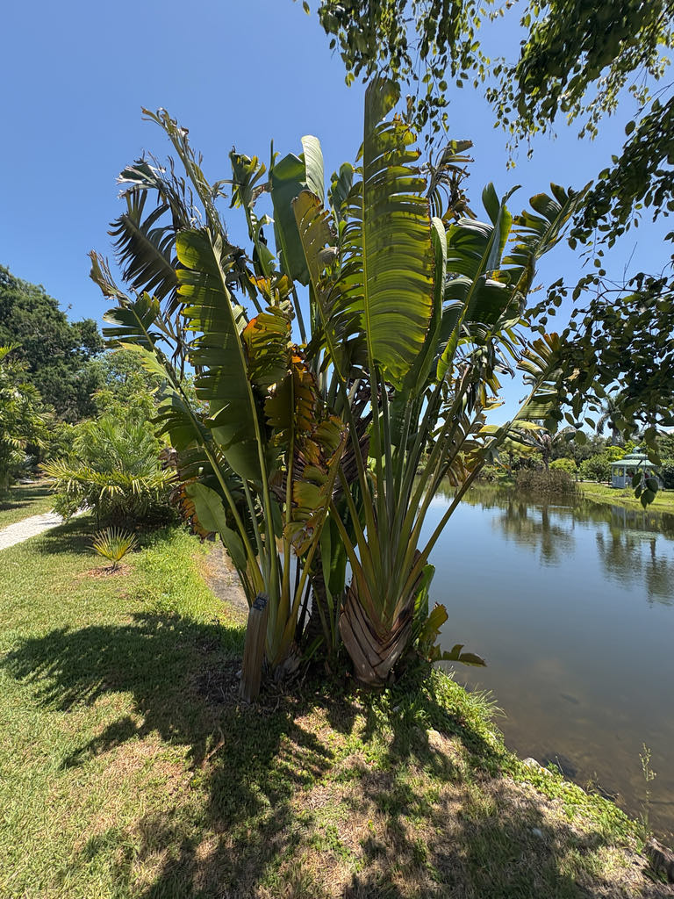

- Not actually a palm — more closely related to the White Bird of Paradise growing twenty feet away in this same collection, and to Heliconia.
- The leaf bases genuinely collect up to a quart of rainwater each — the traveller's water source is real, though you'd want to filter out the insects first.
- In Madagascar, it's pollinated primarily by lemurs — ruffed and black lemurs push their faces into the flowers and carry pollen on their snouts.
- The bright blue seeds are one of the few naturally blue seeds in the plant kingdom — the color is thought to be a co-evolved signal to lemur vision.
Endemic to Madagascar, where it grows in secondary forests and disturbed areas across the eastern rainforest zone. The only species in its genus, making it monotypic — a single species with no close relatives outside the Strelitziaceae family.
- The famous compass claim — that the fan of leaves always orients east-west, allowing lost travelers to navigate — is appealing but not reliably true. The leaves do track sunlight, but the alignment isn't consistent enough to trust your life to. The name more likely refers to the emergency water supply stored in the leaf bases, which is well-documented and real.
- The pollination relationship with lemurs is one of the more remarkable in the plant world. Ruffed lemurs and black lemurs are the primary pollinators — they pry open the tough flower bracts with their hands and push their faces in to reach the nectar, coating their snouts in pollen in the process.
- Lemur nectar feeding from this species accounts for nearly 10% of their daytime feeding at certain times of year. No lemurs in Bradenton, so our specimen relies on large insects, bats, and birds to do that work.
- The Traveller's Palm is the national symbol of Madagascar — appearing on the logo of Air Madagascar and widely used as a symbol of the island. Standing beside this specimen at Palma Sola, you're looking at Madagascar's national tree. Its close relative — the White Bird of Paradise — is growing just steps away, and the family resemblance in leaf architecture is obvious once you know to look.
In Florida, without its native lemur pollinators, the Traveller's Palm relies on large insects, bats, and birds to access the white flowers tucked inside their boat-shaped spathes. The copious nectar — production peaks at midnight — makes it a nighttime wildlife resource. The brilliant blue-ariled seeds are consumed by birds.
The enormous leaf bases collect standing rainwater that provides drinking and bathing opportunities for birds and insects year-round. The broad paddle-shaped leaves also shelter lizards and small animals at the base of the crown.
By division of basal offshoots or by seed. Seeds covered in striking bright blue arils — one of the few naturally blue seeds in the plant kingdom.
White, 3-petaled, 6 to 12 inches long, rising from boat-shaped spathes in clusters similar to Bird of Paradise. Bloom in summer and sporadically throughout the year. Nectar production is copious, peaking at midnight.
Woody capsules about 3.5 inches long, splitting to reveal seeds covered in bright blue arils.
Enormous, banana-like, deep green, 5 to 10 feet long by 2 to 3 feet wide. Arranged in a perfect single plane — all leaves fanning out in one flat orientation. Leaf bases form a cupped reservoir holding up to a quart of water each.
Unbranched, palm-like, ringed with leaf scars.
The perfect single-plane fan is unmistakable — no other plant in the park arranges its leaves this way. Reach into a leaf base and feel for water. Compare the leaf architecture directly with the White Bird of Paradise nearby — the family resemblance is striking. Look for the boat-shaped flower spathes tucked among the leaf bases.
The seeds are edible beneath bright blue arils, and the water that collects in the leaf bases is real and drinkable — though it may hold insects.
It isn't a significant food plant, and has no known toxicity to people or pets.


- © Randall Carter (CC-BY-NC), via iNaturalist